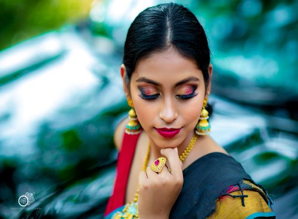
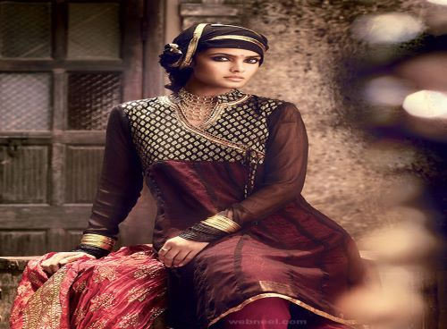

Fashion Photo
 
Fashion Photoshoot
Packages as Per Type of Model with location
Fashion photography focuses on the display of fashion clothing and items.
It is most common on advertising boards and in fashion magazines. The photography will usually feature models wearing the display items.